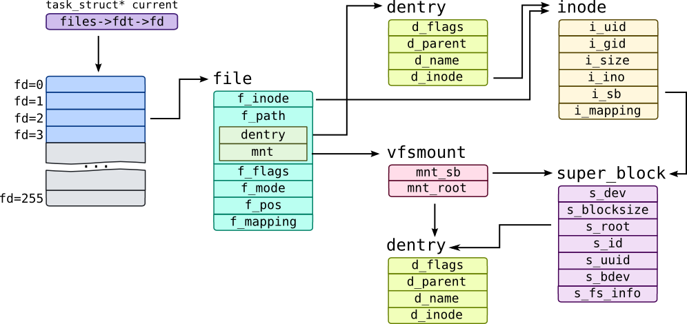
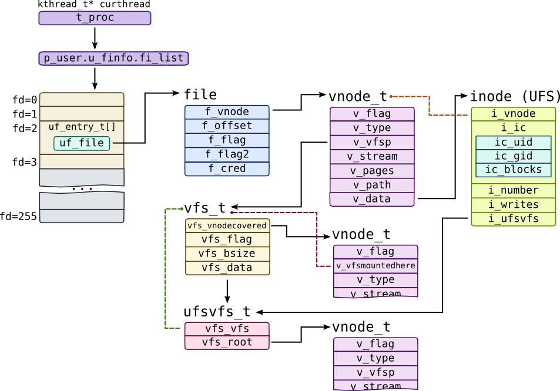
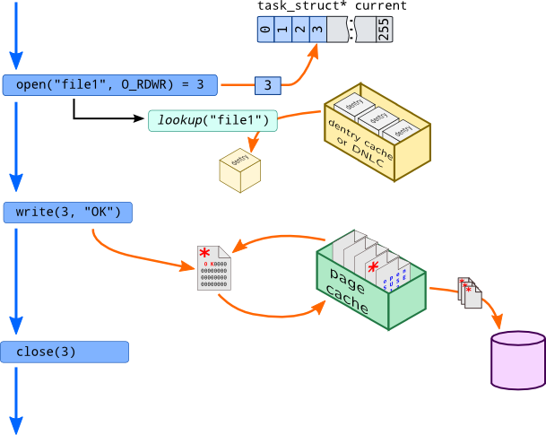

Virtual File System
One of the defining principles of Unix design was "Everything is a file". Files are organized into filesystems of different nature. Some like FAT are pretty simple, some like ZFS and btrfs are complex and incorporate volume manager into them. Some filesystems doesn't require locally attached storage -- networked filesystems such as NFS and CIFS keep data on remote node, while special filesystems do not keep data at all and just representation of kernel structures: for example pipes are files on pipefs in Linux or fifofs in Solaris.
Despite this diversity of filesystem designs, they all share same API and conform same call semantics, so working with local or remote file is transparent for userspace application. To maintain these abstractions, Unix-like systems use Virtual File System (VFS) layer. Each filesystem driver exports table of supported operations to VFS and when system call is issued, VFS performs some pre-liminary actions, finds a filesystem-specific function in that table and calls it.
Each filesystem object has a corresponding data structure as shown in the following table:
| Description | Solaris | Linux |
| Open file entry |
uf_entry_t and file |
file |
| Mounted filesystem |
vfs_t |
vfsmount -- for the mount point super_block -- for the filesystem |
| Table of filesystem operations |
vfsops_t |
super_operations |
| File or directory |
vnode_t |
dentry -- for entry in directory for file itself |
| Table of file/directory operations |
vnodeopts_t |
file_operations -- for opened file inode_operaions -- for inode operations address_space_operations -- for working data and page cache |
Each process keeps table of opened files as an array of corresponding structures. When process opens a file, open() system call returns index in that array which is usually referred to as file descriptor. Following calls such as read() or lseek() will get this index as first argument, get corresponding entry from array, get file structure and use it in VFS calls.
Linux management structures are shown on the following schematic:

Open file table is indirectly accessible through files field of task_struct. We used 256 entries as an example, actual amount of entries may vary. Each entry in this table is an file object which contains information individual for a specific file descriptor such as open mode f_mode and position in file f_pos. For example, single process can open same file twice (one in O_RDONLY mode another in O_RDWR mode) -- in that case f_mode and f_pos for that file will differ, but inode and possibly dentry objects will be the same. Note that last 2 bits of file pointer are used internally by kernel code.
Each file is identifiable by two objects: inode represents service information for file itself like owner information in fields i_uid and i_gid, while dentry represents file in directory hierarchy (dentry is literally a directory entry). d_parent points to a parent dentry -- a dentry of directory where file is located, d_name is a qstr structure which keeps name of the file or directory (to get it use d_name function in SystemTap).
dentry and inode identify a file within filesystem, but systems have multiple filesystems mounted at different locations. That "location" is referred to as mountpoint and tracked through vfsmount structure in Linux which has mnt_root field which points to a directory which acts as mountpoint. Each filesystem has corresponding super_block object which has s_bdev pointer which points to a block device where filesystem data resides, s_blocksize for a block size within filesystem. Short device name is kept in s_id field, while unique id of filesystem is saved into s_uuid field of super block.
Note the i_mapping and f_mapping fields. They point to address_space structures which we have been discussed in section Virtual Memory.
Let's get information on a file used in read() system call:
stap -e '
probe syscall.read {
file = @cast(task_current(), "task_struct")->
files->fdt->fd[fd] & ~3;
if(!file)
next;
dentry = @cast(file, "file")->f_path->dentry;
inode = @cast(dentry, "dentry")->d_inode;
printf("READ %d: file '%s' of size '%d' on device %s\n",
fd, d_name(dentry), @cast(inode, "inode")->i_size,
kernel_string(@cast(inode, "inode")->i_sb->s_id));
} ' -c 'cat /etc/passwd > /dev/null'
You may use task_dentry_path() function from dentry tapset instead of d_name() to get full path of opened file.
fdt array is protected through special RCU lock, so we should lock it before accessing it like pfiles.stp authors do. We have omitted that part in purpose of simplicity.
Solaris structures organization is much more clear:
" />
Like Linux, each process keep an array of uf_entry_t entries while entry in this array points to an open file through uf_file pointer. Each file on filesystem is represented by vnode_t structure (literally, node on virtual file system). When file is opened, Solaris creates new file object and saves open file mode in flag fields f_flag and f_flag2, current file position in f_offset and pointer to a vnode_t in f_vnode.
vnode_t caches absolute path to a file in v_path field. Type of vnode is saved in v_type field: it could be VREG for regular files, VDIR for directories or VFIFO for pipes. VFS will keep v_stream pointing to a stream corresponding to FIFO for pipes, and list of pages v_pages for vnodes that actually keep data. Each filesystem may save its private data in v_data field. For UFS, for example, it is inode structure (UDF also uses different inode structure, so we named it inode (UFS) to distinguish them). UFS keeps id of inode in i_number field, number of outstanding writes in i_number and i_ic field which is physical representation of inode on disk, including uid and gid of owner, size of file, pointers to blocks, etc.
Like in case of vnode, Solaris keeps representation of filesystem in two structures: generic filesystem information like block size vfs_bsize is kept in vfs_t structure, while filesystem-specific information is kept in filesystem structure like ufsvfs_t for UFS. First structure to specific structure through vfs_data pointer. vfs_t refers to its mount point (which is a vnode) through vfs_vnodecovered field, while it refers to filesystem object through v_vfsmountedhere field.
DTrace provides array-translator fds for accessing file information through file descriptor -- it is an array of fileinfo_t structures:
# dtrace -q -n '
syscall::read:entry {
printf("READ %d: file '%s' on filesystem '%s'\n",
arg0, fds[arg0].fi_name, fds[arg0].fi_mount);
}' -c 'cat /etc/passwd > /dev/null'
However, if you need to access vnode_t structure directly, you may use schematic above:
# dtrace -q -n '
syscall::read:entry {
this->fi_list = curthread->t_procp->p_user.u_finfo.fi_list;
this->vn = this->fi_list[arg0].uf_file->f_vnode;
this->mntpt = this->vn->v_vfsp->vfs_vnodecovered;
printf("READ %d: file '%s' on filesystem '%s'\n",
arg0, stringof(this->vn->v_path),
(this->mntpt)
? stringof(this->mntpt->v_path)
: "/");
}' -c 'cat /etc/passwd'
Note that root filesystem have NULL vfs_vnodecovered, because there is no upper-layer filesystem on which it mounted.
Solaris provides stable set of probes which are tracing VFS through fsinfo provider. It provides vnode information as fileinfo_t structures just like fds array:
# dtrace -n '
fsinfo:::mkdir {
trace(args[0]->fi_pathname);
trace(args[0]->fi_mount);
}' -c 'mkdir /tmp/test2'
Note that DTrace prints "unknown" for fi_pathname because when mkdir probe fires, v_path is not filled yet.
VFS interface consists of fop_* functions like fop_mkdir which is callable through macro VOP_MKDIR and, on the other side, call vop_mkdir hook implemented by filesystem through vnodeops_t table. So to trace raw VFS operations you may attach probes directly to that fop_* functions:
# dtrace -n '
fop_mkdir:entry {
trace(stringof(args[1]));
}' -c 'mkdir /tmp/test1'
Now string name should be correctly printed.
There is no unified way to trace VFS in Linux. You can use vfs_* functions the same way you did with fop_*, but not all filesystem operations are implemented with them:
# stap -e '
probe kernel.function("vfs_mkdir") {
println(d_name($dentry));
}' -c 'mkdir /tmp/test4'
You may however use inotify subsystem to track filesystem operations (if CONFIG_FSNOTIFY is set in kernel's configuration):
# stap -e '
probe kernel.function("fsnotify") {
if(!($mask == 0x40000100))
next;
println(kernel_string2($file_name, "???"));
} ' -c 'mkdir /tmp/test3'
In this example 0x40000100 bitmask consists of flags FS_CREATE and FS_ISDIR.
Now let's see how VFS operations performed on files:

Application uses open() system call to open file. At this moment, new file object is created and free entry in open files table is filled with a pointer to that object. Kernel, however needs to find corresponding vnode/dentry object -- it will also need to check some preliminary checks here. I.e. if uid of opening process is not equal to i_uid provided by operating system and file mode is 0600, access should be forbidden.
To perform such mapping between file name passed to open() system call and dentry object, kernel performs a kind of lookup call which searches needed file over directory and returns object. Such operation may be slow (i.e. for file /path/to/file it needs readdir path than do the same with to, and only then seek for file file), so operating systems implement caches of such mappings. They are called dentry cache in Linux and Directory Name Lookup Cache in Solaris.
In Solaris top-level function that performs lookup called lookuppnvp() (literally, lookup vnode pointer by path name). It calls fop_lookup() which will call filesystem driver. Most filesystems however will seek needed path name in DNLC cache, by doing dnlc_lookup():
# dtrace -n '
lookuppnvp:entry /execname == "cat"/ {
trace(stringof(args[0]->pn_path));
}
fop_lookup:entry /execname == "cat"/ {
trace(stringof(arg1));
}
dnlc_lookup:entry /execname == "cat"/ {
trace(stringof(args[0]->v_path)); trace(stringof(arg1));
}' -c 'cat /etc/passwd'
Linux uses unified system for caching file names called Directory Entry Cache or simply, dentry cache. When file is opened, one of d_lookup() functions are called:
# stap -e '
probe kernel.function("__d_lookup*") {
if(execname() != "cat") next;
println(kernel_string($name->name));
}' -c 'cat /etc/passwd > /dev/null'
Now, when file is opened, we can read or write its contents. All file data is located on disk (in case of disk-based file systems), but translating every file operation into block operation is expensive, so operating system maintains page cache. When data is read from file, it is read from disk to corresponding page and then requested chunk is copied to userspace buffer, so subsequent reads to that file won't need any disk operations -- it would be performed on page cache. When data is written onto file, corresponding page is updated and page is marked as dirty (red asterisk on image).
At the unspecified moment of time, page writing daemon which is relocated in kernel scans page cache for dirty pages and writes them back to disk. Note that mmap() operation in this case will simply map pages from page cache to process address space. Not all filesystems use page cache. ZFS, for example, uses its own caching mechanism called Adaptive Replacement Cache or ARC which is built on top of kmem allocator.
Let's see how read() system call is performed in detail:
| Action | Solaris | Linux |
| Application initiates file reading using system call |
read() |
sys_read() |
| Call is passed to VFS stack top layer |
fop_read() |
vfs_read() |
| Call is passed to filesystem driver |
v_ops->vop_read() |
file->f_op->read() or do_sync_read() or new_sync_read() |
|
If file is opened in direct input output mode, appropriate function is called and data is returned |
I.e. ufs_directio_read() |
a_ops->direct_IO |
|
If page is found in page cache, data is returned |
vpm_data_copy() or segmap_getmap_flt() |
file_get_page() |
|
If page was not found in page cache, it is read from filesystem |
v_ops->vop_getpage() |
a_ops->readpage() |
| VFS stack creates block input-output request |
bdev_strategy() |
submit_bio() |
We used names v_ops for table of vnode operations in Solaris, f_op for file_operations and a_ops for address_space_operations in Linux. Note that in Linux filesystems usually implement calls like aio_read or read_iter while read operation calls function like new_sync_read() which converts semantics of read() call to semantics of f_op->read_iter() call. Such "generic" functions are available in generic and vfs tapsets.